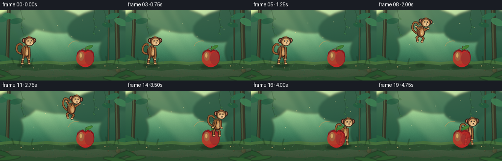

CODING AGENTS AS PIXEL WORLD MODELS
traex/DeepSeek-V4.1-Flash · dynamic_spatial_relationship_0055
点击播放 · 原生 RGB 像素
逐轮保存的候选
回放视频、检查图与代码变化。
每份候选均可单独播放。实际图片检查记录在下方工具轨迹中。
候选 01播放与检查图
点击播放 · 原生 RGB 像素

展开代码变化
--- 上一保存版本
+++ 本次保存版本
@@ -0,0 +1,616 @@
+from __future__ import annotations
+
+import math
+from pathlib import Path
+
+import numpy as np
+from PIL import Image, ImageDraw, ImageFilter
+
+import artifact_io
+
+
+CASE_DIR = Path(__file__).resolve().parent
+W, H = 256, 144
+N, FPS = 20, 4.0
+SS = 4
+
+
+def clamp(value: float, low: float = 0.0, high: float = 1.0) -> float:
+ return max(low, min(high, value))
+
+
+def smoothstep(value: float) -> float:
+ value = clamp(value)
+ return value * value * (3.0 - 2.0 * value)
+
+
+def mix(a: float, b: float, t: float) -> float:
+ return a + (b - a) * t
+
+
+def rgba(color: tuple[int, int, int], alpha: int = 255) -> tuple[int, int, int, int]:
+ return color[0], color[1], color[2], alpha
+
+
+def canvas() -> Image.Image:
+ return Image.new("RGBA", (W * SS, H * SS), (0, 0, 0, 0))
+
+
+def px(value: float) -> int:
+ return int(round(value * SS))
+
+
+def box(cx: float, cy: float, rx: float, ry: float) -> tuple[int, int, int, int]:
+ return px(cx - rx), px(cy - ry), px(cx + rx), px(cy + ry)
+
+
+def draw_leaf(
+ draw: ImageDraw.ImageDraw,
+ cx: float,
+ cy: float,
+ rx: float,
+ ry: float,
+ angle: float,
+ fill: tuple[int, int, int, int],
+ outline: tuple[int, int, int, int] | None = None,
+ width: float = 0.0,
+) -> None:
+ points = []
+ ca, sa = math.cos(math.radians(angle)), math.sin(math.radians(angle))
+ for i in range(22):
+ theta = 2.0 * math.pi * i / 22.0
+ x = rx * math.cos(theta)
+ y = ry * math.sin(theta)
+ points.append((px(cx + x * ca - y * sa), px(cy + x * sa + y * ca)))
+ draw.polygon(points, fill=fill, outline=outline, width=px(width) if width else 1)
+
+
+def draw_rounded_line(
+ draw: ImageDraw.ImageDraw,
+ points: list[tuple[float, float]],
+ fill: tuple[int, int, int, int],
+ width: float,
+ cap_fill: tuple[int, int, int, int] | None = None,
+) -> None:
+ pts = [(px(x), px(y)) for x, y in points]
+ w = max(1, px(width))
+ draw.line(pts, fill=fill, width=w, joint="curve")
+ cap = cap_fill or fill
+ radius = width * 0.5
+ for x, y in points:
+ draw.ellipse(box(x, y, radius, radius), fill=cap)
+
+
+def quadratic_points(
+ p0: tuple[float, float],
+ p1: tuple[float, float],
+ p2: tuple[float, float],
+ count: int = 16,
+) -> list[tuple[float, float]]:
+ result = []
+ for i in range(count):
+ t = i / (count - 1)
+ u = 1.0 - t
+ result.append(
+ (
+ u * u * p0[0] + 2.0 * u * t * p1[0] + t * t * p2[0],
+ u * u * p0[1] + 2.0 * u * t * p1[1] + t * t * p2[1],
+ )
+ )
+ return result
+
+
+def make_background() -> Image.Image:
+ w, h = W * SS, H * SS
+ y = np.linspace(0.0, 1.0, h, dtype=np.float32)[:, None]
+ stops = [
+ (0.00, np.array([190.0, 224.0, 168.0], dtype=np.float32)),
+ (0.32, np.array([128.0, 188.0, 139.0], dtype=np.float32)),
+ (0.62, np.array([63.0, 128.0, 94.0], dtype=np.float32)),
+ (0.84, np.array([36.0, 83.0, 62.0], dtype=np.float32)),
+ (1.00, np.array([24.0, 57.0, 43.0], dtype=np.float32)),
+ ]
+ rgb = np.empty((h, w, 3), dtype=np.float32)
+ for i in range(len(stops) - 1):
+ a, ca = stops[i]
+ b, cb = stops[i + 1]
+ mask = (y[:, 0] >= a) & (y[:, 0] <= b)
+ local = (y[mask, 0] - a) / (b - a)
+ rgb[mask] = (ca[None, :] + (cb - ca)[None, :] * local[:, None])[:, None, :]
+ rgb = np.broadcast_to(rgb, (h, w, 3)).copy()
+
+ yy, xx = np.mgrid[0:h, 0:w].astype(np.float32)
+ sun = np.exp(-(((xx - 0.13 * w) ** 2) / (2.0 * (0.31 * w) ** 2) + ((yy - 0.02 * h) ** 2) / (2.0 * (0.22 * h) ** 2)))
+ rgb += sun[..., None] * np.array([54.0, 47.0, 16.0], dtype=np.float32)[None, None, :]
+
+ rng = np.random.default_rng(17)
+ texture = rng.normal(0.0, 2.2, (h // 3, w // 3, 1)).astype(np.float32)
+ texture = np.asarray(Image.fromarray(((texture + 8.0) * 12.0).clip(0, 255).astype(np.uint8)[..., 0]).resize((w, h), Image.Resampling.BILINEAR), dtype=np.float32)
+ rgb += (texture[..., None] - 96.0) * 0.055
+
+ vignette_x = (xx / w - 0.5) * 2.0
+ vignette_y = (yy / h - 0.5) * 2.0
+ vignette = 1.0 - 0.13 * np.clip(vignette_x * vignette_x * 0.55 + vignette_y * vignette_y * 0.35, 0.0, 1.4)
+ rgb *= vignette[..., None]
+ return Image.fromarray(np.clip(rgb, 0, 255).astype(np.uint8), "RGB").convert("RGBA")
+
+
+def add_distant_forest(base: Image.Image) -> None:
+ w, h = base.size
+ distant = canvas()
+ d = ImageDraw.Draw(distant)
+
+ # Soft, out-of-focus canopy masses establish depth without competing with the actors.
+ masses = [
+ (30, 29, 54, 31, -18, (38, 84, 65, 210)),
+ (105, 20, 70, 25, 8, (43, 91, 69, 190)),
+ (205, 31, 69, 33, -10, (34, 77, 59, 220)),
+ (245, 83, 42, 42, 12, (31, 74, 56, 190)),
+ (13, 76, 33, 40, -8, (33, 79, 58, 200)),
+ ]
+ for cx, cy, rx, ry, angle, color in masses:
+ draw_leaf(d, cx, cy, rx, ry, angle, rgba(color[:3], color[3]))
+ distant = distant.filter(ImageFilter.GaussianBlur(px(2.2)))
+ base.alpha_composite(distant)
+
+ trunks = canvas()
+ td = ImageDraw.Draw(trunks)
+ for x, width, lean in [(18, 7, -3), (238, 9, 2), (222, 3, -1)]:
+ points = [(x, 0), (x + lean * 0.4, 42), (x + lean, 91), (x + lean * 1.2, 123)]
+ draw_rounded_line(td, points, rgba((54, 55, 38), 255), width)
+ draw_rounded_line(td, [(p[0] - width * 0.18, p[1]) for p in points], rgba((99, 86, 54), 125), max(1.0, width * 0.27))
+ trunks = trunks.filter(ImageFilter.GaussianBlur(px(0.55)))
+ base.alpha_composite(trunks)
+
+ foliage = canvas()
+ fd = ImageDraw.Draw(foliage)
+ leaf_specs = [
+ (8, 17, 12, 6, -28, (46, 105, 73, 235)),
+ (19, 12, 14, 6, 12, (56, 120, 79, 235)),
+ (33, 22, 13, 6, -9, (39, 94, 66, 235)),
+ (229, 12, 15, 6, -18, (45, 108, 75, 240)),
+ (246, 24, 14, 7, 24, (61, 126, 82, 235)),
+ (219, 30, 11, 5, 9, (36, 91, 62, 235)),
+ (8, 99, 16, 6, 23, (41, 99, 63, 225)),
+ (247, 105, 18, 7, -18, (44, 104, 65, 225)),
+ ]
+ for cx, cy, rx, ry, angle, color in leaf_specs:
+ draw_leaf(fd, cx, cy, rx, ry, angle, rgba(color[:3], color[3]))
+ base.alpha_composite(foliage)
+
+ vines = canvas()
+ vd = ImageDraw.Draw(vines)
+ for points in [
+ [(42, 0), (46, 16), (43, 34), (48, 50)],
+ [(193, 0), (190, 17), (194, 33), (190, 47)],
+ [(212, 0), (216, 12), (213, 26)],
+ ]:
+ draw_rounded_line(vd, points, rgba((46, 91, 53, 170), 170), 0.8)
+ for x, y in points[1:]:
+ draw_leaf(vd, x + 2.0, y + 1.0, 3.0, 1.5, 35, rgba((60, 117, 67, 180), 180))
+ base.alpha_composite(vines.filter(ImageFilter.GaussianBlur(px(0.35))))
+
+
+def add_ground(base: Image.Image) -> None:
+ ground = canvas()
+ d = ImageDraw.Draw(ground)
+ top = [(0, 105), (28, 102), (61, 106), (96, 103), (130, 106), (164, 103), (199, 105), (230, 102), (256, 106)]
+ points = top + [(256, 144), (0, 144)]
+ d.polygon([(px(x), px(y)) for x, y in points], fill=rgba((44, 77, 47), 255))
+
+ # Mossy rim and a warmer path through the clearing.
+ rim = [(0, 105), (28, 102), (61, 106), (96, 103), (130, 106), (164, 103), (199, 105), (230, 102), (256, 106), (256, 112), (224, 108), (194, 111), (160, 109), (126, 112), (91, 109), (58, 112), (26, 108), (0, 111)]
+ d.polygon([(px(x), px(y)) for x, y in rim], fill=rgba((69, 111, 59), 255))
+ path = [(0, 126), (35, 121), (73, 124), (111, 120), (151, 123), (191, 119), (226, 122), (256, 118), (256, 137), (218, 134), (179, 138), (139, 134), (100, 138), (58, 134), (0, 137)]
+ d.polygon([(px(x), px(y)) for x, y in path], fill=rgba((91, 96, 62), 130))
+
+ rng = np.random.default_rng(31)
+ for _ in range(130):
+ x = rng.uniform(0, W)
+ y = rng.uniform(108, 143)
+ length = rng.uniform(1.0, 4.5)
+ color = (58, 103, 54, int(rng.integers(90, 190))) if rng.random() < 0.72 else (115, 101, 64, int(rng.integers(55, 125)))
+ d.line([(px(x), px(y)), (px(x + rng.uniform(-1.3, 1.3)), px(y - length))], fill=rgba(color[:3], color[3]), width=max(1, px(0.38)))
+ for _ in range(36):
+ x = rng.uniform(2, 254)
+ y = rng.uniform(111, 141)
+ rx = rng.uniform(0.8, 2.5)
+ ry = rng.uniform(0.45, 1.2)
+ d.ellipse(box(x, y, rx, ry), fill=rgba((139, 130, 82), int(rng.integers(35, 80))))
+
+ base.alpha_composite(ground)
+
+
+def add_light_and_foreground(base: Image.Image) -> None:
+ rays = canvas()
+ rd = ImageDraw.Draw(rays)
+ rd.polygon([(px(18), px(0)), (px(76), px(0)), (px(149), px(112)), (px(111), px(112))], fill=rgba((244, 235, 164), 25))
+ rd.polygon([(px(85), px(0)), (px(104), px(0)), (px(166), px(108)), (px(145), px(108))], fill=rgba((255, 241, 166), 16))
+ rays = rays.filter(ImageFilter.GaussianBlur(px(5.0)))
+ base.alpha_composite(rays)
+
+ foreground = canvas()
+ fd = ImageDraw.Draw(foreground)
+
+ # A few out-of-focus foreground fronds anchor the edges.
+ for cx, cy, rx, ry, angle, color in [
+ (4, 128, 20, 5, 18, (37, 82, 43, 225)),
+ (19, 138, 23, 4, -8, (45, 93, 45, 210)),
+ (251, 130, 20, 5, -20, (35, 79, 42, 225)),
+ (235, 141, 25, 4, 8, (46, 94, 46, 210)),
+ ]:
+ draw_leaf(fd, cx, cy, rx, ry, angle, rgba(color[:3], color[3]))
+
+ for x, y, height, bend in [
+ (28, 110, 12, -4),
+ (39, 109, 8, 2),
+ (64, 110, 11, 3),
+ (218, 108, 13, -2),
+ (232, 111, 10, 4),
+ (242, 108, 9, -3),
+ ]:
+ pts = quadratic_points((x, y), (x + bend * 0.4, y - height * 0.55), (x + bend, y - height))
+ draw_rounded_line(fd, pts, rgba((55, 115, 52, 210), 210), 0.9)
+
+ for x, y, radius, color in [
+ (43, 116, 1.4, (239, 215, 119)),
+ (68, 118, 1.2, (246, 225, 153)),
+ (214, 114, 1.4, (235, 206, 115)),
+ (239, 117, 1.2, (245, 222, 145)),
+ ]:
+ fd.ellipse(box(x, y, radius, radius), fill=rgba(color, 235))
+ fd.ellipse(box(x, y - 0.2, radius * 0.42, radius * 0.42), fill=rgba((255, 250, 201), 220))
+
+ foreground = foreground.filter(ImageFilter.GaussianBlur(px(0.65)))
+ base.alpha_composite(foreground)
+
+
+def add_shadow(base: Image.Image, cx: float, cy: float, rx: float, ry: float, alpha: int) -> None:
+ layer = canvas()
+ d = ImageDraw.Draw(layer)
+ d.ellipse(box(cx, cy, rx, ry), fill=rgba((11, 27, 17), alpha))
+ layer = layer.filter(ImageFilter.GaussianBlur(px(1.6)))
+ base.alpha_composite(layer)
+
+
+def apple_layer() -> Image.Image:
+ layer = canvas()
+ d = ImageDraw.Draw(layer)
+ cx, cy = 174.0, 98.0
+
+ silhouette = [
+ (cx, cy - 15.0),
+ (cx + 5.0, cy - 18.0),
+ (cx + 11.5, cy - 16.8),
+ (cx + 16.5, cy - 11.8),
+ (cx + 18.2, cy - 3.0),
+ (cx + 17.2, cy + 6.5),
+ (cx + 12.0, cy + 14.3),
+ (cx + 5.0, cy + 18.3),
+ (cx, cy + 19.0),
+ (cx - 5.0, cy + 18.3),
+ (cx - 12.0, cy + 14.3),
+ (cx - 17.2, cy + 6.5),
+ (cx - 18.2, cy - 3.0),
+ (cx - 16.5, cy - 11.8),
+ (cx - 11.5, cy - 16.8),
+ (cx - 5.0, cy - 18.0),
+ ]
+ d.polygon([(px(x), px(y)) for x, y in silhouette], fill=rgba((130, 26, 31), 255))
+
+ inner = []
+ for x, y in silhouette:
+ inner.append((cx + (x - cx) * 0.91, cy + 1.5 + (y - cy) * 0.90))
+ d.polygon([(px(x), px(y)) for x, y in inner], fill=rgba((190, 41, 39), 255))
+
+ # Two soft lobes and a warm lit cheek keep the apple readable at video scale.
+ d.ellipse(box(cx - 7.0, cy + 1.0, 11.5, 13.5), fill=rgba((203, 50, 39), 205))
+ d.ellipse(box(cx + 7.5, cy + 0.5, 9.0, 13.0), fill=rgba((181, 36, 37), 210))
+ d.ellipse(box(cx - 8.5, cy - 4.0, 5.4, 9.5), fill=rgba((235, 84, 48), 150))
+ d.ellipse(box(cx - 9.2, cy - 5.5, 2.3, 4.5), fill=rgba((255, 180, 98), 190))
+ d.arc(box(cx - 0.5, cy - 5.0, 15.0, 15.0), 202, 325, fill=rgba((104, 20, 27), 120), width=px(1.1))
+
+ # Stem and a small leaf.
+ draw_rounded_line(d, [(cx + 0.5, cy - 15.2), (cx + 1.5, cy - 23.2)], rgba((82, 55, 29), 255), 1.7)
+ draw_leaf(d, cx + 7.5, cy - 22.2, 8.3, 3.3, -24, rgba((64, 126, 51), 255), rgba((38, 84, 34), 255), 0.45)
+ d.line([(px(cx + 2.4), px(cy - 22.1)), (px(cx + 12.2), px(cy - 23.2))], fill=rgba((142, 178, 71), 190), width=max(1, px(0.45)))
+
+ # A crisp rim light separates the foreground fruit from the dark moss.
+ d.arc(box(cx - 18.3, cy - 17.0, 18.0, 18.5), 202, 285, fill=rgba((248, 150, 72), 170), width=px(0.8))
+ return layer
+
+
+def rotate_point(lx: float, ly: float, angle_deg: float, scale: float) -> tuple[float, float]:
+ ca, sa = math.cos(math.radians(angle_deg)), math.sin(math.radians(angle_deg))
+ x = lx * scale
+ y = ly * scale
+ return x * ca - y * sa, x * sa + y * ca
+
+
+def monkey_layer(pose: dict[str, float]) -> Image.Image:
+ layer = canvas()
+ d = ImageDraw.Draw(layer)
+ x, y = pose["x"], pose["y"]
+ scale = pose.get("scale", 1.0)
+ tilt = pose.get("tilt", 0.0)
+ air = pose.get("air", 0.0)
+ crouch = pose.get("crouch", 0.0)
+ land = pose.get("land", 0.0)
+ tail_wave = pose.get("tail_wave", 0.0)
+
+ def world(lx: float, ly: float) -> tuple[float, float]:
+ rx, ry = rotate_point(lx, ly, tilt, scale)
+ return x + rx, y + ry
+
+ def ellipse(lx: float, ly: float, rx: float, ry: float, fill, outline=None, width=0.0):
+ wx, wy = world(lx, ly)
+ d.ellipse(box(wx, wy, rx * scale, ry * scale), fill=fill, outline=outline, width=px(width) if width else 1)
+
+ def limb(points: list[tuple[float, float]], width: float, fill, cap=None):
+ draw_rounded_line(d, [world(px_, py_) for px_, py_ in points], fill, width * scale, cap)
+
+ dark = rgba((53, 35, 25), 255)
+ fur = rgba((112, 70, 43), 255)
+ fur_mid = rgba((148, 94, 51), 255)
+ fur_light = rgba((184, 126, 70), 255)
+ tan = rgba((210, 166, 111), 255)
+ tan_light = rgba((231, 194, 142), 255)
+ inner_ear = rgba((187, 119, 91), 255)
+ eye = rgba((26, 22, 18), 255)
+
+ # Tail: a broad dark curve with a warm center line.
+ sway = 2.2 * math.sin(tail_wave)
+ tail_start = (-7.0, 5.0)
+ tail_ctrl = (-22.0 - 2.0 * air, 3.0 + sway - 7.0 * air)
+ tail_end = (-17.0 + 1.5 * land, -12.0 - 8.0 * air + 1.2 * sway)
+ tail_points = quadratic_points(tail_start, tail_ctrl, tail_end, 20)
+ tail_points += quadratic_points(tail_end, (-11.0, -18.0 - 3.0 * air), (-7.0, -13.0 - 2.0 * air), 9)[1:]
+ limb(tail_points, 4.4, dark)
+ limb(tail_points, 2.6, fur_mid)
+ tip = tail_points[-1]
+ ellipse(tip[0] + 0.3, tip[1], 2.0, 2.0, fur_mid, dark, 0.6)
+
+ # Legs, with a tucked silhouette in flight.
+ for side, sign in [(-1, -1), (1, 1)]:
+ hip = (sign * 2.2, 8.0)
+ knee_idle = (sign * 5.8, 17.0)
+ foot_idle = (sign * 7.0, 25.0)
+ knee_air = (sign * 7.2, 13.0)
+ foot_air = (sign * 4.0, 20.0)
+ knee = (mix(knee_idle[0], knee_air[0], air), mix(knee_idle[1], knee_air[1], air))
+ foot = (mix(foot_idle[0], foot_air[0], air), mix(foot_idle[1], foot_air[1], air))
+ if crouch > 0.0:
+ knee = (knee[0] + sign * 1.6 * crouch, knee[1] - 1.2 * crouch)
+ foot = (foot[0] + sign * 0.7 * crouch, foot[1] - 1.2 * crouch)
+ limb([hip, knee, foot], 5.2, dark)
+ limb([hip, knee, foot], 3.1, fur_mid)
+ ellipse(foot[0] + 0.6, foot[1] + 0.2, 2.7, 1.9, tan, dark, 0.55)
+
+ # Torso and pale belly.
+ ellipse(0.0, 0.0, 9.2, 12.4, dark)
+ ellipse(-0.1, -0.2, 7.4, 10.8, fur)
+ ellipse(2.4, 1.1, 4.2, 8.0, fur_light)
+ ellipse(3.0, 2.3, 2.5, 5.8, tan)
+ ellipse(-4.2, -5.0, 2.1, 4.2, fur_mid)
+
+ # Arms: reach forward at takeoff and stay open during the arc.
+ arm_specs = [
+ (-1, (-2.5, -7.0), (-11.0, -10.0), (-12.5, -15.0), (-3.5, 8.2), (-5.4, 16.5)),
+ (1, (7.2, -6.7), (14.0, -9.0), (16.0, -14.5), (8.0, 8.0), (7.0, 16.2)),
+ ]
+ for sign, shoulder, hand_air, hand_air2, elbow_idle, hand_idle in arm_specs:
+ elbow = (mix(elbow_idle[0], hand_air[0] * 0.55, air), mix(elbow_idle[1], hand_air[1] * 0.7, air))
+ hand = (mix(hand_idle[0], hand_air2[0], air), mix(hand_idle[1], hand_air2[1], air))
+ if crouch > 0.0:
+ hand = (hand[0] - sign * 1.8 * crouch, hand[1] + 1.0 * crouch)
+ limb([shoulder, elbow, hand], 5.0, dark)
+ limb([shoulder, elbow, hand], 2.9, fur_mid)
+ ellipse(hand[0] + sign * 0.3, hand[1], 2.6, 2.1, tan, dark, 0.55)
+ d.line(
+ [(px(world(hand[0] - 0.9, hand[1] + 0.2)[0]), px(world(hand[0] - 0.9, hand[1] + 0.2)[1])),
+ (px(world(hand[0] + 0.9, hand[1] + 0.5)[0]), px(world(hand[0] + 0.9, hand[1] + 0.5)[1]))],
+ fill=rgba((136, 91, 58), 180),
+ width=max(1, px(0.3)),
+ )
+
+ # Ears sit behind the head.
+ ellipse(-2.2, -22.0, 5.3, 5.3, dark)
+ ellipse(-2.2, -22.0, 3.4, 3.5, inner_ear)
+ ellipse(16.3, -22.4, 5.5, 5.4, dark)
+ ellipse(16.3, -22.4, 3.6, 3.7, inner_ear)
+
+ # Head, face, and a small tuft.
+ ellipse(7.5, -20.5, 10.8, 9.8, dark)
+ ellipse(7.5, -20.5, 9.2, 8.4, fur)
+ ellipse(8.2, -19.0, 7.5, 7.1, tan)
+ ellipse(9.3, -16.3, 5.2, 3.7, tan_light)
+ d.polygon(
+ [
+ (px(world(4.8, -29.0)[0]), px(world(4.8, -29.0)[1])),
+ (px(world(6.3, -32.2)[0]), px(world(6.3, -32.2)[1])),
+ (px(world(7.3, -28.9)[0]), px(world(7.3, -28.9)[1])),
+ (px(world(9.0, -32.0)[0]), px(world(9.0, -32.0)[1])),
+ (px(world(10.2, -28.3)[0]), px(world(10.2, -28.3)[1])),
+ ],
+ fill=fur_mid,
+ )
+
+ # Eyes and muzzle.
+ ellipse(5.1, -21.4, 1.15, 1.35, eye)
+ ellipse(11.3, -21.6, 1.15, 1.35, eye)
+ ellipse(4.8, -21.8, 0.38, 0.43, rgba((255, 250, 224), 245))
+ ellipse(11.0, -22.0, 0.38, 0.43, rgba((255, 250, 224), 245))
+ ellipse(9.6, -17.1, 1.45, 0.92, rgba((74, 48, 35), 255))
+ d.arc(
+ [px(world(7.3, -16.0)[0]), px(world(7.3, -16.0)[1]), px(world(12.1, -14.8)[0]), px(world(12.1, -14.8)[1])],
+ 12,
+ 155,
+ fill=rgba((91, 54, 39), 255),
+ width=max(1, px(0.45)),
+ )
+ d.arc(
+ [px(world(4.0, -27.0)[0]), px(world(4.0, -27.0)[1]), px(world(13.0, -24.0)[0]), px(world(13.0, -24.0)[1])],
+ 198,
+ 342,
+ fill=rgba((235, 185, 122), 135),
+ width=max(1, px(0.35)),
+ )
+
+ # Fur and rim highlights.
+ limb([(2.0, -9.0), (1.0, -4.0), (2.2, 1.0)], 0.75, fur_light)
+ limb([(-4.0, -10.0), (-5.0, -4.0), (-4.2, 2.0)], 0.55, rgba((171, 113, 63), 180))
+ d.arc(
+ [px(world(-9.0, -12.0)[0]), px(world(-9.0, -12.0)[1]), px(world(10.0, 13.0)[0]), px(world(10.0, 13.0)[1])],
+ 204,
+ 314,
+ fill=rgba((230, 179, 105), 125),
+ width=max(1, px(0.6)),
+ )
+ return layer
+
+
+def monkey_pose(frame: int) -> dict[str, float]:
+ # Idle, anticipation, a smooth jump arc, and a settled landing behind the apple.
+ if frame <= 3:
+ q = frame / 3.0
+ return {
+ "x": 52.0 + 1.8 * math.sin(q * math.pi * 0.8),
+ "y": 84.0 + 0.8 * math.sin(q * math.pi),
+ "scale": 1.0,
+ "tilt": 1.2 * math.sin(q * math.pi),
+ "air": 0.0,
+ "crouch": 0.06 + 0.12 * q,
+ "land": 0.0,
+ "tail_wave": q * 1.3,
+ }
+ if frame == 4:
+ return {
+ "x": 58.0,
+ "y": 88.0,
+ "scale": 1.0,
+ "tilt": 1.0,
+ "air": 0.0,
+ "crouch": 1.0,
+ "land": 0.0,
+ "tail_wave": 1.5,
+ }
+ if frame <= 15:
+ q = (frame - 5.0) / 10.0
+ x = mix(63.0, 190.0, smoothstep(q))
+ y = 84.0 - 50.0 * math.sin(math.pi * q)
+ return {
+ "x": x,
+ "y": y,
+ "scale": 1.0 - 0.035 * math.sin(math.pi * q),
+ "tilt": 9.0 * math.sin(math.pi * q),
+ "air": math.sin(math.pi * q),
+ "crouch": 0.15 * (1.0 - math.sin(math.pi * q)),
+ "land": 0.0,
+ "tail_wave": 1.5 + 2.4 * q,
+ }
+ q = (frame - 16.0) / 3.0
+ settle = 1.0 - smoothstep(q)
+ return {
+ "x": mix(190.0, 188.0, smoothstep(q)),
+ "y": 84.0 + 1.8 * math.sin(q * math.pi) + 0.5 * settle,
+ "scale": 0.985,
+ "tilt": 2.0 * settle,
+ "air": 0.0,
+ "crouch": 0.45 * settle,
+ "land": 1.0,
+ "tail_wave": 3.9 + q * 1.3,
+ }
+
+
+def add_dust(base: Image.Image, frame: int) -> None:
+ layer = canvas()
+ d = ImageDraw.Draw(layer)
+ puffs: list[tuple[float, float, float, float, int]] = []
+ if 3 <= frame <= 7:
+ t = (frame - 3) / 4.0
+ for i in range(5):
+ puffs.append((52.0 - i * 2.2 - t * 8.0, 111.0 - i * 1.0 - t * 5.0, 2.2 + t * 3.2, 1.1 + t * 1.8, int(70 * (1.0 - t))))
+ if 14 <= frame <= 18:
+ t = (frame - 14) / 4.0
+ for i in range(4):
+ puffs.append((187.0 + i * 2.0 + t * 7.0, 111.0 - i * 0.7 - t * 3.5, 2.0 + t * 2.6, 1.0 + t * 1.3, int(65 * (1.0 - t * 0.75))))
+ for x, y, rx, ry, alpha in puffs:
+ d.ellipse(box(x, y, rx, ry), fill=rgba((219, 198, 137), alpha))
+ if puffs:
+ base.alpha_composite(layer.filter(ImageFilter.GaussianBlur(px(1.0))))
+
+
+def add_motes(base: Image.Image, frame: int) -> None:
+ layer = canvas()
+ d = ImageDraw.Draw(layer)
+ t = frame / (N - 1)
+ specs = [
+ (91, 44, 1.1, 0.80),
+ (118, 30, 0.8, 0.45),
+ (148, 57, 1.0, 0.66),
+ (202, 39, 0.9, 0.36),
+ (69, 72, 0.7, 0.52),
+ (170, 24, 0.8, 0.72),
+ ]
+ for i, (x, y, r, phase) in enumerate(specs):
+ yy = y + 4.0 * math.sin((t + phase) * math.pi * 2.0)
+ xx = x + 2.0 * math.cos((t + phase) * math.pi * 1.3)
+ alpha = int(70 + 55 * (0.5 + 0.5 * math.sin((t + phase) * math.pi * 2.0)))
+ d.ellipse(box(xx, yy, r, r), fill=rgba((255, 238, 164), alpha))
+ base.alpha_composite(layer)
+
+
+def render_frame(frame: int, background: Image.Image) -> np.ndarray:
+ base = background.copy()
+ pose = monkey_pose(frame)
+
+ # Ground shadows are part of the scene, not the actors.
+ jump_height = max(0.0, 84.0 - pose["y"])
+ shadow_rx = mix(16.0, 8.0, clamp(jump_height / 52.0))
+ shadow_alpha = int(mix(105.0, 48.0, clamp(jump_height / 52.0)))
+ add_shadow(base, pose["x"] - 1.0, 112.5, shadow_rx, 4.2, shadow_alpha)
+ add_shadow(base, 174.0, 116.0, 22.0, 4.6, 95)
+
+ monkey = monkey_layer(pose)
+ apple = apple_layer()
+
+ # The layer swap is the depth cue: the fruit sits in front after the monkey lands.
+ if frame >= 15:
+ base.alpha_composite(monkey)
+ base.alpha_composite(apple)
+ else:
+ base.alpha_composite(apple)
+ base.alpha_composite(monkey)
+
+ add_dust(base, frame)
+ add_motes(base, frame)
+ final = base.convert("RGB").resize((W, H), Image.Resampling.LANCZOS)
+ return np.asarray(final, dtype=np.uint8)
+
+
+def main() -> None:
+ background = make_background()
+ add_distant_forest(background)
+ add_ground(background)
+ add_light_and_foreground(background)
+ frames = np.stack([render_frame(i, background) for i in range(N)], axis=0)
+ artifact_io.save(frames, CASE_DIR)
+
+ # Also provide a directly playable video alongside the benchmark artifacts.
+ try:
+ import imageio.v2 as imageio
+
+ imageio.mimsave(
+ CASE_DIR / "video.mp4",
+ [Image.fromarray(frame) for frame in frames],
+ fps=FPS,
+ codec="libx264",
+ quality=8,
+ macro_block_size=1,
+ )
+ except Exception as exc:
+ print(f"MP4 encoder unavailable: {exc}")
+
+
+if __name__ == "__main__":
+ main()
候选 02播放与检查图
点击播放 · 原生 RGB 像素

展开代码变化
--- 上一保存版本
+++ 本次保存版本
@@ -496,7 +496,7 @@
}
if frame <= 15:
q = (frame - 5.0) / 10.0
- x = mix(63.0, 190.0, smoothstep(q))
+ x = mix(63.0, 179.0, smoothstep(q))
y = 84.0 - 50.0 * math.sin(math.pi * q)
return {
"x": x,
@@ -511,7 +511,7 @@
q = (frame - 16.0) / 3.0
settle = 1.0 - smoothstep(q)
return {
- "x": mix(190.0, 188.0, smoothstep(q)),
+ "x": mix(179.0, 176.0, smoothstep(q)),
"y": 84.0 + 1.8 * math.sin(q * math.pi) + 0.5 * settle,
"scale": 0.985,
"tilt": 2.0 * settle,
候选 03播放与检查图
可观测工具轨迹
实际执行的命令与返回图片。
命令 1exit 0
/bin/bash -c "pwd && rg --files -g '"'!*.mp4'"' -g '"'!*.webm'"' -g '"'!*.mov'"' | sed -n '1,200p'"
命令 2exit 0
/bin/bash -c "printf '%s\\n' '--- prompt.txt ---'; cat prompt.txt; printf '%s\\n' '--- GENERATION_RULES.md ---'; cat GENERATION_RULES.md; printf '%s\\n' '--- task_spec.json ---'; cat task_spec.json"
命令 3exit 0
/bin/bash -c "ls -la; printf '%s\\n' '--- tool availability ---'; command -v ffmpeg || true; command -v ffprobe || true; command -v python3 || true; command -v node || true; command -v blender || true; command -v chromium || true; command -v google-chrome || true"
命令 4exit 0
/bin/bash -c "sed -n '1,260p' artifact_io.py"
命令 5exit 0
/bin/bash -c "sed -n '1,260p' player_template.html"
命令 6exit 0
/bin/bash -c "python3 - <<'PY' import importlib.util for m in ['numpy','PIL','imageio','imageio_ffmpeg','cv2','matplotlib','cairo']: print(m, bool(importlib.util.find_spec(m))) PY"
命令 7exit 0
/bin/bash -c 'for c in chafa viu img2txt jp2 timg kitty; do command -v "$c" && echo "$c"; done; python3 - <<'"'PY'
from PIL import Image
print('Pillow', Image.__version__)
PY"命令 8exit 1
/bin/bash -c 'python3 -m py_compile generate.py && python3 generate.py'
命令 9exit 0
/bin/bash -c 'python3 -m py_compile generate.py && python3 generate.py'
命令 10exit 0
/bin/bash -c "find frames -maxdepth 1 -type f -printf '%f\\n' | sort | wc -l; identify inspection.png frames/00.png frames/09.png frames/19.png video.mp4 2>/dev/null || true; ls -lh pixels.npz inspection.png transition_check.png video.mp4 index.html"
命令 11exit 0
/bin/bash -c "python3 - <<'PY'
from PIL import Image
im=Image.open('frames/00.png').resize((64,36))
for y in range(0,36,2):
row=[]
for x in range(64):
a=im.getpixel((x,y)); b=im.getpixel((x,min(y+1,35)))
row.append(f'\\x1b[38;2;{a[0]};{a[1]};{a[2]}m\\x1b[48;2;{b[0]};{b[1]};{b[2]}mâ')
print(''.join(row)+'\\x1b[0m')
PY"命令 12exit 0
/bin/bash -c "python3 - <<'PY'
from PIL import Image
import numpy as np
for i in [0,4,5,9,12,15,19]:
a=np.array(Image.open(f'frames/{i:02d}.png')).astype(int)
# red-ish apple pixels and brown monkey pixels
red=(a[:,:,0]>120)&(a[:,:,0]>a[:,:,1]*1.6)&(a[:,:,0]>a[:,:,2]*1.4)
brown=(a[:,:,0]>70)&(a[:,:,0]>a[:,:,1]*1.15)&(a[:,:,1]>a[:,:,2]*1.05)
print(i,'red bbox',np.where(red)[1].min() if red.any() else None,np.where(red)[1].max() if red.any() else None,'brown bbox', (np.where(brown)[1].min(),np.where(brown)[1].max(),np.where(brown)[0].min(),np.where(brown)[0].max()) if brown.any() else None)
PY"命令 13exit 0
/bin/bash -c "python3 - <<'PY'
from PIL import Image
import numpy as np
from pathlib import Path
frames=np.stack([np.array(Image.open(f'frames/{i:02d}.png')).astype(np.int16) for i in range(20)])
# Summarize motion energy and compare consecutive frames.
for i in range(1,20):
d=np.abs(frames[i]-frames[i-1]).mean(axis=2)
print(f'{i:02d}: mean={d.mean():5.2f} changed={np.mean(d>8):.3f} max={d.max():.0f}')
# quantile checks ensure nonblank, colorful output
print('global rgb means',frames.mean(axis=(0,1,2)))
print('std',frames.std())
PY"命令 14exit 0
/bin/bash -c "command -v identify || true; command -v convert || true; command -v ffprobe || true; python3 - <<'PY' import imageio_ffmpeg print(imageio_ffmpeg.get_ffmpeg_exe()) PY"
命令 15exit 0
/bin/bash -c "python3 - <<'PY'
import generate
from PIL import Image
import numpy as np
for f in [0,9,15,19]:
m=generate.monkey_layer(generate.monkey_pose(f))
a=generate.apple_layer()
ma=np.array(m)[:,:,3]>20
aa=np.array(a)[:,:,3]>20
# visible monkey mask after apple front for landed frames
if f>=15:
vis=ma & ~aa
else:
vis=ma
ys,xs=np.where(ma)
print(f,'monkey', (xs.min()/4,xs.max()/4,ys.min()/4,ys.max()/4),'apple',(np.where(aa)[1].min()/4,np.where(aa)[1].max()/4,np.where(aa)[0].min()/4,np.where(aa)[0].max()/4),'visible%',round(vis.sum()/ma.sum()*100,1))
# ASCII overlay at 2 px per character, crop x 20..220, y 0..124
if f in [0,19]:
out=[]
for yy in range(0,124,3):
row=''
for xx in range(20,220,2):
X=slice(xx*4,xx*4+8); Y=slice(yy*4,yy*4+12)
mv=vis[Y,X].mean(); av=aa[Y,X].mean()
if av>.25: row+='R'
elif mv>.20: row+='M'
else: row+=' '
out.append(row.rstrip())
print('\\n'.join(out))
PY"命令 16exit 0
/bin/bash -c "python3 - <<'PY'
import generate
from PIL import Image
import numpy as np
for f in [0,4,5,9,12,15,19]:
m=generate.monkey_layer(generate.monkey_pose(f)); a=generate.apple_layer()
bg=generate.make_background(); generate.add_distant_forest(bg); generate.add_ground(bg); generate.add_light_and_foreground(bg)
base=bg.copy(); addm=generate.monkey_layer(generate.monkey_pose(f))
if f>=15: base.alpha_composite(addm); base.alpha_composite(a)
else: base.alpha_composite(a); base.alpha_composite(addm)
base=base.convert('RGB').resize((256,144),Image.Resampling.LANCZOS)
# object crop enlarged with nearest for ASCII of actual colors
crop=base.crop((20,0,220,122)).resize((100,40),Image.Resampling.LANCZOS)
# ANSI foreground only, not doubling
if f in [0,9,19]:
print('\\nFRAME',f)
for y in range(40):
s=''
for x in range(100):
p=crop.getpixel((x,y)); lum=(p[0]*.3+p[1]*.59+p[2]*.11)
if p[0]>p[1]*1.3 and p[0]>90: ch='R'
elif p[0]>p[1]*1.08 and p[1]>p[2]*1.03 and p[1]>45: ch='m' if lum<110 else 'M'
elif lum<40: ch='#'
elif lum<65: ch='+'
else: ch='.'
s+=ch
print(s.rstrip())
PY"命令 17exit 0
/bin/bash -c "python3 generate.py && python3 - <<'PY' import generate, numpy as np for f in [0,5,9,12,15,16,19]: m=np.array(generate.monkey_layer(generate.monkey_pose(f)))[:,:,3]>20 a=np.array(generate.apple_layer())[:,:,3]>20 vis=m & ~a if f>=15 else m print(f, 'monkey visible after apple:', round(vis.sum()/m.sum()*100,1), '%') PY"
命令 18exit 0
/bin/bash -c "python3 - <<'PY'
from PIL import Image
import numpy as np
from pathlib import Path
frames=np.stack([np.array(Image.open(f'frames/{i:02d}.png')) for i in range(20)])
Image.fromarray(frames[0]).resize((768,432),Image.Resampling.NEAREST).save('.tmp/frame0_large.png')
Image.fromarray(frames[9]).resize((768,432),Image.Resampling.NEAREST).save('.tmp/frame9_large.png')
Image.fromarray(frames[19]).resize((768,432),Image.Resampling.NEAREST).save('.tmp/frame19_large.png')
# luminance and saturation distribution
Y=frames.astype(float)@np.array([.2126,.7152,.0722])
print('luminance p5,p50,p95:',np.percentile(Y,[5,50,95]))
print('frame shape',frames.shape,'dtype',frames.dtype)
# key object area and separation at opening
for idx in [0,4,5,9,12,15,19]:
im=frames[idx]
red=(im[:,:,0].astype(int)>130)&(im[:,:,0]>im[:,:,1]*1.65)&(im[:,:,0]>im[:,:,2]*1.4)
print(idx,'red pixels',red.sum())
PY
python3 - <<'PY'
import imageio_ffmpeg, subprocess
exe=imageio_ffmpeg.get_ffmpeg_exe()
subprocess.run([exe,'-hide_banner','-loglevel','error','-i','video.mp4','-vf','showinfo','-f','null','-'],check=True)
PY"命令 19exit 0
/bin/bash -c "python3 - <<'PY'
import json, numpy as np
from PIL import Image
from pathlib import Path
import imageio_ffmpeg, subprocess, re
case=Path('.')
spec=json.loads((case/'task_spec.json').read_text())
z=np.load(case/'pixels.npz')
assert set(z.files)=={'pixels'}
p=z['pixels']
assert p.shape==(spec['height'],spec['width'],spec['frames'])
assert p.dtype==np.uint32
frames=np.stack([np.array(Image.open(case/'frames'/f'{i:02d}.png')) for i in range(spec['frames'])])
assert frames.shape==(20,144,256,3) and frames.dtype==np.uint8
packed=(frames[:,:,:,0].astype(np.uint32)<<16)|(frames[:,:,:,1].astype(np.uint32)<<8)|frames[:,:,:,2].astype(np.uint32)
assert np.array_equal(p,packed.transpose(1,2,0))
assert (case/'index.html').stat().st_size>100000
print('RGB contract OK:',frames.shape,'uint8')
print('20 unique frames:',len({Image.fromarray(f).tobytes() for f in frames}))
exe=imageio_ffmpeg.get_ffmpeg_exe()
r=subprocess.run([exe,'-hide_banner','-i','video.mp4'],capture_output=True,text=True)
for line in r.stderr.splitlines():
if 'Duration:' in line or 'Video:' in line: print(line.strip())
PY
ls -lh generate.py frames/00.png frames/19.png inspection.png transition_check.png pixels.npz index.html video.mp4"保存候选 3 份；完成命令 19 次；可验证图片返回 0 张。原始 API 响应与完整日志保留在本地。